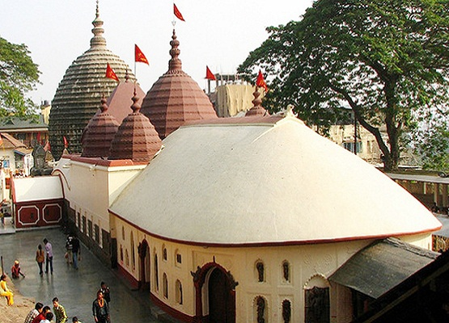
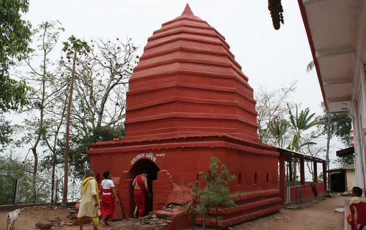

Temples and pilgrims in Assam
Welcome to Heritage of India 🌴 | Explore Culture and Temples 🛕
The Kamakhya Temple

The Kamakhya Temple, located on Nilachal Hill in Guwahati, Assam, is a premier Hindu pilgrimage site and one of the oldest of the 51 Shakti Peethas, dedicated to Goddess Kamakhya. It is famously known as the "bleeding goddess" temple, representing the tantric, feminine power of menstruation, and hosts the annual Ambubachi Mela.
Key Tourist Information:
- Location: Nilachal Hills, Guwahati, Assam (approx. 7 km from city center).
- Best Time to Visit: October to April for pleasant weather; June for the Ambubachi Mela.
- Darshan Timings: Opens at 9:00 AM, with a break for bhog (offerings) at 1:00 PM, and closes at sunset.
- Entry Fee & Booking: General darshan is free. VIP tickets (approx. ₹501) are available at the temple counter.
- How to Reach: Accessible by taxi, auto-rickshaw, or bus from Guwahati railway station or airport (approx. 20-30 mins from city center).
- Important Information: Photography is prohibited inside the sanctum. The site is a significant Tantric hub, often attracting devotees for fertility blessings.
- Official website link.
Umananda Temple

Umananda Temple, built in 1694 on Peacock Island in Guwahati's Brahmaputra River, is a 17th-century shrine dedicated to Lord Shiva. Known as the smallest inhabited river island in the world, this tranquil spot (or 'Bhasmachala') is reachable by ferry from Guwahati's bank. It is famous for Shivratri festivities and sightings of the rare golden langur.
Key Information:
- Location: Peacock Island, Guwahati, Assam.
- Deity: Lord Shiva (Umananda).
- History: Built in 1694 by Bar Phukan Garhganya Handique under King Gadadhar Singha.
- Reached via ferry/boat from Kachari Ghat in Guwahati.
- Best Time to Visit: November to March.
- Hours: Generally 5:00 AM to 6:00 PM.
Visitor Tips:
- Ferry: Government ferries and private boats are available at Umananda Ghat.
- Festival: The temple is exceptionally crowded during Shivratri.
- Note: The island is safe and fully functional, although it is small.
- Click here for more information.